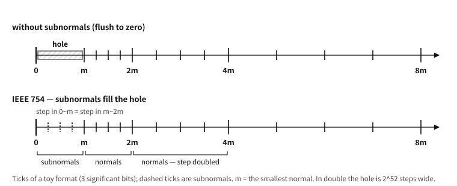
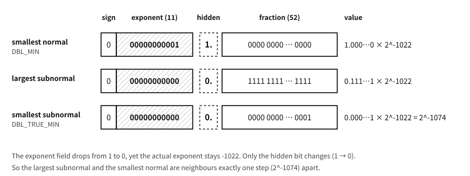

54 Real numbers — the mathematics of approximation
What to know first
Looking back
Chapter 7 said 0.1 + 0.2 and 0.3 are neighbours one final bit (1 ulp) apart, and that comparison must change into “are they close enough?”. Then how is the criterion of “enough” — the epsilon — decided?
A. That it must vary with the size of the values is the lesson of chapter 7′s third incident. Near 0 the ticks are dense so a small fixed value will do, but around the tick spacing itself exceeds 1 and the same criterion becomes meaningless. So practice keeps two — absolute error (for near 0) and relative error (proportional to size). This chapter’s demonstration shows both side by side.
The need for this chapter, and its context
By the end of this chapter
float and double, the correct way to compare (epsilon — absolute and relative), and the special values (infinity, NaN). Chapter 7′s three incidents are confirmed by execution results. Then we open the floor near zero — the subnormals — bit by bit, and follow the mechanism of three security incidents that actually broke out on that floor.The questions this chapter answers
- Should real numbers then not be used for things like money?
- Why put something this complicated into the standard? Flushing to zero would make the hardware simpler.
- The three incidents in one sentence?
54.1 Choosing a type, and comparing#
examples-en/floats/eps.c
#include <math.h>
#include <stdio.h>
/* absolute error: used for comparisons near 0 */
bool near_abs(double a, double b, double eps)
{
return fabs(a - b) < eps;
}
/* relative error: as values grow the spacing grows, so the tolerance scales with size */
bool near_rel(double a, double b, double rel)
{
double scale = fabs(a) > fabs(b) ? fabs(a) : fabs(b);
return fabs(a - b) <= rel * scale;
}
int main(void)
{
double sum = 0.1 + 0.2;
printf("0.1 + 0.2 == 0.3 ? %d\n", sum == 0.3);
printf("compare with absolute eps? %d\n", near_abs(sum, 0.3, 1e-9));
printf("%.20f\n", sum);
printf("%.20f\n", 0.3);
double big = 1e16;
printf("1e16 + 1 == 1e16 ? %d (gap wider than 1)\n", big + 1 == big);
printf("compare with relative eps? %d\n", near_rel(big + 1, big, 1e-12));
return 0;
}
Output
0.1 + 0.2 == 0.3 ? 0
compare with absolute eps? 1
0.30000000000000004441
0.29999999999999998890
1e16 + 1 == 1e16 ? 1 (gap wider than 1)
compare with relative eps? 1
The first three lines are the execution check of chapter 7′s first incident — == is false, and printed to twenty digits the two numbers diverge at the end. Use near_abs (absolute error) and it becomes true.
The latter part checks the third incident (absorption) — add 1 to and the value is unchanged, because at that size the gap between representable neighbours is already wider than 1 (chapter 7′s tick calculation). Here the right tool is not absolute error but near_rel (relative error).
Reduced to practical rules there are three. The default is double — as chapter 7 showed, the room in precision is of a different order, and float is chosen only where memory and bandwidth are tight. Do not use == — code asking whether two reals are equal is almost always suspect (there are exceptions, such as comparing against an integer or against 0, but they must be judged consciously). The tolerance comes from the problem — it is decided by looking at the nature of the calculation and the size of the values; there is no magic constant.
54.2 Special values — infinity and NaN#
IEEE 754 (chapter 7) defines special values besides ordinary numbers. Infinity (positive and negative) comes out of overflow or division by zero, and NaN (Not a Number) means “not a number” — the result of an undefinable operation such as or the square root of a negative.
One thing has to be stated exactly here. Integer division by zero is outside the contract (chapter 29), and floating-point division by zero is commonly said to “be defined and give infinity”. That, however, is not a promise of the C language itself. The standard’s rule for division leaves the behaviour undefined when the second operand is zero — for reals as much as for integers. Infinity appears in implementations that support IEC 60559 (that is, IEEE 754) semantics. In such an implementation, dividing a finite non-zero value by zero gives a signed infinity and raises the divide-by-zero exception, while falls on the NaN side. Today’s mainstream compilers on x86-64 and AArch64 behave that way, but it is not something the standard forces on every implementation.
Platform note. Where this distinction actually bites
The mark by which an implementation declares that it follows IEC 60559 for binary floating point is __STDC_IEC_60559_BFP__ (BFP = binary floating point). Where that macro is defined, annex F semantics are a contract and the behaviour above may be expected. Decimal floating point is marked separately, by __STDC_IEC_60559_DFP__.
It must not be confused with the similarly named __STDC_IEC_60559_BF16_TYPES__ — that is a separate feature mark, about whether bfloat16 types are provided, and has nothing to do with the semantics of ordinary binary floating-point operations. And note further that a type having the same format as IEC 60559 and the operations following annex F are two different questions — the former is what __STDC_IEC_60559_TYPES__ speaks to; what is needed here is the latter. Where it does not — some embedded toolchains, and builds that deliberately switch annex F semantics off with something like -ffast-math — the guarantee of infinity and NaN goes away. Portable code screens out a zero divisor first.
54.2.1 Opening the bits directly#
Having seen the layout in chapter 7, we now print the bits of real values and check them. To move a representation we use memcpy rather than a union — by chapter 49′s rule that is the safest passage for “moving a value”, and compilers mostly make the copy disappear.
examples-en/floats/bits.c
/* Opening up a real number — how sign, exponent and fraction really sit in it.
Type punning goes through memcpy, not a union (the rule of chapters 37 and 48). */
#include <inttypes.h>
#include <math.h>
#include <stdio.h>
#include <string.h>
static uint64_t bits_of(double d)
{
uint64_t u;
memcpy(&u, &d, sizeof u); /* the representation moved as it is */
return u;
}
static uint32_t bits_of_f(float f)
{
uint32_t u;
memcpy(&u, &f, sizeof u);
return u;
}
/* double: 1 sign + 11 exponent + 52 fraction */
static void dump(const char *label, double d)
{
uint64_t u = bits_of(d);
unsigned sign = (unsigned)(u >> 63);
unsigned expo = (unsigned)((u >> 52) & 0x7FFu);
uint64_t frac = u & 0xFFFFFFFFFFFFFu;
printf("%-12s %016" PRIx64 " sign %u exp %4u(=%+5d) frac %013" PRIx64,
label, u, sign, expo,
expo == 0 ? -1022 : (int)expo - 1023, frac);
if (expo == 0x7FF) printf(" <- %s", frac ? "NaN" : "infinity");
else if (expo == 0) printf(" <- %s", frac ? "subnormal" : "zero");
printf("\n");
}
int main(void)
{
puts("-- the bits of a double (1 sign + 11 exponent + 52 fraction) --");
dump("1.0", 1.0);
dump("-1.0", -1.0);
dump("0.5", 0.5);
dump("2.0", 2.0);
dump("0.1", 0.1);
dump("0.3", 0.3);
dump("0.1+0.2", 0.1 + 0.2);
dump("0.0", 0.0);
dump("-0.0", -0.0);
dump("inf", INFINITY);
dump("NaN", NAN);
puts("\n-- 0.1 + 0.2 and 0.3 differ in their bits --");
printf("0.1+0.2 = %.20f\n", 0.1 + 0.2);
printf("0.3 = %.20f\n", 0.3);
printf("the bits: %016" PRIx64 " vs %016" PRIx64 " (the last bit)\n",
bits_of(0.1 + 0.2), bits_of(0.3));
puts("\n-- move one ULP from 1.0 and the last digit of the fraction rises by 1 --");
double one = 1.0;
double next = nextafter(1.0, 2.0);
printf("1.0 %016" PRIx64 "\n", bits_of(one));
printf("next value %016" PRIx64 " difference %.17g\n", bits_of(next), next - one);
printf("equal to DBL_EPSILON? %s\n",
(next - one) == 0x1p-52 ? "yes" : "no");
puts("\n-- a float uses the same structure, more narrowly (1 + 8 + 23) --");
float f = 0.1f;
uint32_t fu = bits_of_f(f);
printf("0.1f %08" PRIx32 " sign %u exp %3u(=%+4d) frac %06" PRIx32 "\n",
fu, fu >> 31, (fu >> 23) & 0xFFu, (int)((fu >> 23) & 0xFFu) - 127,
fu & 0x7FFFFFu);
printf("printing (double)0.1f gives %.17g — the trace of narrowing to float\n",
(double)f);
puts("\n-- below the smallest normal number come the subnormals --");
double small = 0x1p-1022; /* the smallest normal number */
dump("2^-1022", small);
dump("half", small / 2); /* subnormal */
dump("2^-1074", 0x1p-1074); /* the smallest subnormal */
dump("half again", 0x1p-1074 / 2); /* it sinks to zero */
return 0;
}
Output
-- the bits of a double (1 sign + 11 exponent + 52 fraction) --
1.0 3ff0000000000000 sign 0 exp 1023(= +0) frac 0000000000000
-1.0 bff0000000000000 sign 1 exp 1023(= +0) frac 0000000000000
0.5 3fe0000000000000 sign 0 exp 1022(= -1) frac 0000000000000
2.0 4000000000000000 sign 0 exp 1024(= +1) frac 0000000000000
0.1 3fb999999999999a sign 0 exp 1019(= -4) frac 999999999999a
0.3 3fd3333333333333 sign 0 exp 1021(= -2) frac 3333333333333
0.1+0.2 3fd3333333333334 sign 0 exp 1021(= -2) frac 3333333333334
0.0 0000000000000000 sign 0 exp 0(=-1022) frac 0000000000000 <- zero
-0.0 8000000000000000 sign 1 exp 0(=-1022) frac 0000000000000 <- zero
inf 7ff0000000000000 sign 0 exp 2047(=+1024) frac 0000000000000 <- infinity
NaN 7ff8000000000000 sign 0 exp 2047(=+1024) frac 8000000000000 <- NaN
-- 0.1 + 0.2 and 0.3 differ in their bits --
0.1+0.2 = 0.30000000000000004441
0.3 = 0.29999999999999998890
the bits: 3fd3333333333334 vs 3fd3333333333333 (the last bit)
-- move one ULP from 1.0 and the last digit of the fraction rises by 1 --
1.0 3ff0000000000000
next value 3ff0000000000001 difference 2.2204460492503131e-16
equal to DBL_EPSILON? yes
-- a float uses the same structure, more narrowly (1 + 8 + 23) --
0.1f 3dcccccd sign 0 exp 123(= -4) frac 4ccccd
printing (double)0.1f gives 0.10000000149011612 — the trace of narrowing to float
-- below the smallest normal number come the subnormals --
2^-1022 0010000000000000 sign 0 exp 1(=-1022) frac 0000000000000
half 0008000000000000 sign 0 exp 0(=-1022) frac 8000000000000 <- subnormal
2^-1074 0000000000000001 sign 0 exp 0(=-1022) frac 0000000000001 <- subnormal
half again 0000000000000000 sign 0 exp 0(=-1022) frac 0000000000000 <- zero
Five things from the output are worth pointing at.
First, 1.0 is remarkably tidy. The exponent field holds 1023 (the bias itself, so the actual exponent is 0) and the fraction is all zeros — the hidden bit alone makes . 2.0 raises the exponent by one, 0.5 lowers it by one, and flipping the sign bit gives -1.0.
Second, 0.1 shows the cut mark of an unending fraction. Its fraction ends in 999999999999a, and that final a is the trace of rounding. It is chapter 7′s mathematics box — “it does not come out even in binary” — laid bare in bits.
Third, 0.1 + 0.2 and 0.3 differ by one last bit. The two bit patterns end ...3334 and ...3333, exactly one apart. That is why the == comparison is false, and why this chapter talks about tolerances.
Fourth, the identity of one ULP becomes visible. Adding the integer 1 to the bits of 1.0 gives the very next real number, and the difference is DBL_EPSILON (). “The smallest distinguishable difference near 1.0” turns out to be a single bit.
Fifth, the subnormals appear at the floor. Halve the smallest normal number and the exponent cannot go lower, so zeros begin to fill the front of the fraction instead — that state, with the exponent field all zeros, is a subnormal. Precision is given up little by little on the way down to zero, and when the last bit disappears the value becomes zero. This design, fading out instead of falling abruptly to zero, is called gradual underflow. What this floor looks like, and what collapsed on top of it, get two sections of their own later in this chapter.
NaN has one famous property — it is not even equal to itself. If x != x is true then x is NaN, and that is the classic idiom for detecting NaN (today one uses isnan()). Being a value that breaks the basic property of the relation “equality”, NaN mixed into sorting or searching algorithms produces strange results — which is why checking for NaN at the boundary is the practice when handling real-number data.
In practice. The accumulation of 0.1 seconds — the Patriot missile incident
Q. Should real numbers then not be used for things like money?
A. Not using them is the standard — this is exactly the place for the fixed point learned in chapter 7. Handle amounts as real numbers in units of won and discrepancies at the 0.1-won level accumulate until the ledger does not balance, so the practice of financial software is to compute in integers of the smallest unit and put the decimal point in only when displaying. Reduced to a rule — integers (fixed point) where the exact decimal value matters, floating point for physical quantities and scientific computation. It is fitting the tool to the problem, and the grounds for that judgement are the nature of representation learned in chapter 7 and here.
54.3 The floor near zero — subnormal numbers#
Now we open properly the subnormal numbers that the fifth point above passed by. Older literature calls them denormals (denormalised numbers); they are the same thing. This section asks three questions. Why are they needed? What do they look like in bits? And what do they cost? The answer to the last question leads straight into the security incidents of the next section.
54.3.1 The hole you get with normal numbers alone#
A normal number always has a significand of the form 1.xxx. So the smallest positive normal double is the value with the exponent at its floor (−1022) and a significand of 1.000…0: . <float.h> calls it DBL_MIN (about ). Its neighbour just above is — the tick spacing here is .
Now look downward. With normal numbers alone there is nothing between 0 and DBL_MIN. The rule that the significand must begin with 1 makes a normal number smaller than DBL_MIN impossible. That empty stretch is wide — times the tick spacing just above it, about 4.5 quadrillion times. The ticks march along densely and then, just before zero, a cliff.

Figure 54.1 — With normal numbers alone there is a hole before zero. Subnormals fill it with ticks at the same spacing.
Why is the hole a problem? Take two normal numbers and . They are plainly different. But their difference falls exactly into the hole. If the hole is empty, the difference has nowhere to go but the nearest representable value: zero. Look at this code.
double inverse_gap(double x, double y)
{
if (x != y)
return 1.0 / (x - y); /* checked they differ, so no division by zero? */
return 0.0;
}“If two numbers differ, their difference is not zero” is so obvious that nobody questions it. In a world with the hole, it breaks — the function above checks x != y and divides by zero anyway. In IEEE 754, with subnormals, the premise always holds: the difference of two finite numbers is zero exactly when they are equal. What subnormals protect is not a handful of very small numbers but the safety of obvious reasoning like this.
54.3.2 Two rules change#
A subnormal is a value whose exponent field is all zeros. Then two rules of interpretation change at once.
- The hidden bit is 0, not 1. The significand reads
0.xxx, not1.xxx. Because the leading digit may now be 0, values smaller thanDBL_MINcan be made. - The actual exponent is pinned at −1022, not −1023. Apply the normal rule (stored exponent − 1023) and you would expect , but a subnormal’s exponent is . It uses the same exponent as the smallest normal, whose field holds 1.
So a subnormal value is rebuilt like this. Set beside the formula for normals, it differs in exactly two places.

Figure 54.2 — The bits on both sides of the normal/subnormal border. The exponent field drops from 1 to 0, but the actual exponent stays.
The second rule is the heart of it, and the place beginners most often go wrong — one of the two incidents in the next section came from code that treated this −1022 as −1023.
The mathematics. Why −1022 and not −1023
Compare the largest subnormal with the smallest normal. The largest subnormal has a fraction field of all ones.
The smallest normal is . The two are apart — exactly the tick spacing of the first stretch of normals. The ticks run straight across the border without a break.
Had the subnormal exponent been set at −1023, the largest subnormal would be . Then a new empty stretch would open between and (the hole would only halve, not vanish), and the spacing inside the subnormals () would differ from the spacing above (). −1022 is the one choice that prevents both at once.
And with that choice, every tick from 0 up to sits at the same spacing, . The subnormal range is really “integers in units of ” — the fixed point of chapter 7. At the floor, floating point turns into fixed point.
The boundary values of both formats, gathered in a table. All the names live in <float.h>; names for “the smallest subnormal” such as DBL_TRUE_MIN arrived in C11.
| Name | Meaning | Value |
|---|---|---|
FLT_MIN | smallest normal float | |
FLT_TRUE_MIN | smallest subnormal float | |
DBL_MIN | smallest normal double | |
DBL_TRUE_MIN | smallest subnormal double |
Table 54.1 — The floor of float and double (the tick in the subnormal range equals the smallest subnormal)
54.3.3 The price — precision leaks at the floor#
Subnormals fill the hole, but not for free. As zeros fill the front of the significand, fewer significant bits remain. A normal number always carries 53 bits of precision; a subnormal keeps only the bits from the leading 1 of its fraction field down. The smallest subnormal, DBL_TRUE_MIN, has a single significant bit. Run it and see.
examples-en/floats/subnormal.c
/* The floor near zero — the bits and behaviour of subnormals.
When the exponent field is all zeros, two rules change: the hidden bit
becomes 0, and the actual exponent is pinned at 1 - 1023 = -1022, not
0 - 1023. The bits are read through memcpy (the same way as bits.c). */
#include <float.h>
#include <inttypes.h>
#include <math.h>
#include <stdio.h>
#include <stdlib.h>
#include <string.h>
static uint64_t bits_of(double d)
{
uint64_t u;
memcpy(&u, &d, sizeof u);
return u;
}
static const char *kind(double d)
{
switch (fpclassify(d)) {
case FP_ZERO: return "zero";
case FP_SUBNORMAL: return "subnormal";
case FP_NORMAL: return "normal";
case FP_INFINITE: return "infinite";
default: return "NaN";
}
}
/* Significant bits: a normal number always has 53, counting the hidden bit.
A subnormal keeps only the bits from the leading 1 of the fraction field down. */
static int significant_bits(double d)
{
uint64_t u = bits_of(d);
unsigned expo = (unsigned)((u >> 52) & 0x7FFu);
uint64_t frac = u & 0xFFFFFFFFFFFFFu;
if (expo != 0) return 53;
int n = 0;
while (frac) { n++; frac >>= 1; }
return n;
}
/* all the bits, exponent field, actual exponent and hidden bit on one line */
static void dump(const char *label, double d)
{
uint64_t u = bits_of(d);
unsigned expo = (unsigned)((u >> 52) & 0x7FFu);
printf("%-15s %016" PRIx64 " exp %4u (2^%-5d) hidden %d %-9s %2d bits\n",
label, u, expo, expo == 0 ? -1022 : (int)expo - 1023,
expo == 0 ? 0 : 1, kind(d), significant_bits(d));
}
int main(void)
{
puts("-- the floor of double: both sides of the border --");
double min_normal = DBL_MIN; /* 2^-1022 */
double max_sub = nextafter(DBL_MIN, 0.0); /* the neighbour just below */
double min_sub = DBL_TRUE_MIN; /* 2^-1074 (C11) */
dump("above DBL_MIN", nextafter(DBL_MIN, 1.0));
dump("DBL_MIN", min_normal);
dump("max subnormal", max_sub);
dump("DBL_TRUE_MIN", min_sub);
printf("DBL_MIN = %.17g\n", DBL_MIN);
printf("DBL_TRUE_MIN = %.17g\n", DBL_TRUE_MIN);
printf("issubnormal(DBL_MIN) %d, issubnormal(largest subnormal) %d (C23)\n",
issubnormal(min_normal) != 0, issubnormal(max_sub) != 0);
puts("\n-- the step is the same on both sides of the border --");
printf("DBL_MIN - largest subnormal == DBL_TRUE_MIN ? %s\n",
min_normal - max_sub == DBL_TRUE_MIN ? "yes" : "no");
printf("next above DBL_MIN - DBL_MIN == DBL_TRUE_MIN ? %s\n",
nextafter(DBL_MIN, 1.0) - min_normal == DBL_TRUE_MIN ? "yes" : "no");
puts("\n-- x != y, so x - y is not zero (gradual underflow) --");
double x = 1.5 * DBL_MIN, y = DBL_MIN;
double diff = x - y;
printf("x == y ? %s\n", x == y ? "yes" : "no");
dump("x - y", diff);
printf("x - y == 0 ? %s\n", diff == 0.0 ? "yes" : "no");
puts("\n-- the price: 0.1 pushed down by 2^-k and lifted back --");
for (int k = 1018; k <= 1074; k += 8) {
double low = ldexp(0.1, -k);
printf("k = %4d %-9s %2d bits back up: %.17g\n",
k, kind(low), significant_bits(low), ldexp(low, k));
}
puts("\n-- the string that once hung PHP and Java --");
const char *texts[] = { "2.2250738585072011e-308", "2.2250738585072012e-308" };
for (int i = 0; i < 2; i++) {
double d = strtod(texts[i], nullptr);
printf("%s -> %016" PRIx64 " %s\n", texts[i], bits_of(d), kind(d));
}
puts("\n-- one subnormal row poisons the running sum --");
/* Of ten rows only row 3 yields a tiny value. Once the sum d has become
subnormal, every later addition takes a subnormal operand. */
double d = 0.0;
int slow = 0;
for (int row = 0; row < 10; row++) {
double v = (row == 3) ? 1e-310 : 0.0;
if (issubnormal(d) || issubnormal(v)) slow++;
d += v;
}
printf("sum %s, additions that touched a subnormal: %d of 10\n", kind(d), slow);
return 0;
}
Output
-- the floor of double: both sides of the border --
above DBL_MIN 0010000000000001 exp 1 (2^-1022) hidden 1 normal 53 bits
DBL_MIN 0010000000000000 exp 1 (2^-1022) hidden 1 normal 53 bits
max subnormal 000fffffffffffff exp 0 (2^-1022) hidden 0 subnormal 52 bits
DBL_TRUE_MIN 0000000000000001 exp 0 (2^-1022) hidden 0 subnormal 1 bits
DBL_MIN = 2.2250738585072014e-308
DBL_TRUE_MIN = 4.9406564584124654e-324
issubnormal(DBL_MIN) 0, issubnormal(largest subnormal) 1 (C23)
-- the step is the same on both sides of the border --
DBL_MIN - largest subnormal == DBL_TRUE_MIN ? yes
next above DBL_MIN - DBL_MIN == DBL_TRUE_MIN ? yes
-- x != y, so x - y is not zero (gradual underflow) --
x == y ? no
x - y 0008000000000000 exp 0 (2^-1022) hidden 0 subnormal 52 bits
x - y == 0 ? no
-- the price: 0.1 pushed down by 2^-k and lifted back --
k = 1018 normal 53 bits back up: 0.10000000000000001
k = 1026 subnormal 45 bits back up: 0.10000000000000142
k = 1034 subnormal 37 bits back up: 0.1000000000003638
k = 1042 subnormal 29 bits back up: 0.10000000009313226
k = 1050 subnormal 21 bits back up: 0.10000002384185791
k = 1058 subnormal 13 bits back up: 0.100006103515625
k = 1066 subnormal 5 bits back up: 0.1015625
k = 1074 zero 0 bits back up: 0
-- the string that once hung PHP and Java --
2.2250738585072011e-308 -> 000fffffffffffff subnormal
2.2250738585072012e-308 -> 0010000000000000 normal
-- one subnormal row poisons the running sum --
sum subnormal, additions that touched a subnormal: 7 of 10
Read the output from the top.
The first group is the figure’s bits exactly. DBL_MIN has an exponent field of 1; the largest subnormal and DBL_TRUE_MIN have 0. Yet all three have the actual exponent 2^-1022, and only the hidden bit changes. The significant bits fall 53 → 52 → 1. issubnormal, new in C23, splits the two sides of the border exactly.
The second group checks the mathematics box. One step below the border and one step above it are both DBL_TRUE_MIN, that is .
The third group is proof that the hole is filled. , and stays a nonzero subnormal. The inverse_gap above is safe on this machine.
The fourth group is the price. 0.1 is pressed down by onto the floor and lifted back by . At k = 1018, still normal, 0.1 comes back intact. Once in the subnormal range, every 8 steps lose 8 significant bits and the value that comes back drifts further from 0.1. With 5 bits left it is 0.1015625, and in the end it is 0. The normal-number promise that “relative error is at most half of DBL_EPSILON” is not kept at the floor — the relative comparison of the earlier section (near_rel) does not do the job you expect in this range either.
The last two groups preview two of the next section’s incidents.
Note where the C standard stands. It leaves whether subnormals are treated as zero implementation-defined (§5.2.5.3.3). But an implementation that follows IEC 60559 (that is, IEEE 754) arithmetic always treats subnormals as nonzero. Macros such as DBL_HAS_SUBNORM, which said whether subnormals exist, became obsolescent in C23. Today you classify a value with fpclassify and FP_SUBNORMAL (C99) or with issubnormal (C23, §7.12.3.9).
Q. Why put something this complicated into the standard? Flushing to zero would make the hardware simpler.
A. That exact argument was the longest fight in the IEEE 754 committee, from the late 1970s on. William Kahan, who was consulting on the design of Intel’s 8087, wrote a draft with his student Jerome Coonen and the visiting professor Harold Stone (called K-C-S after their initials) that included gradual underflow. DEC, the big vendor of the day, pushed instead for the formats of its widely installed VAX — which flushed underflow to zero — and the opposition was led by DEC’s numerics expert Mary Payne. DEC tried to show that gradual underflow was harmful and then asked the numerical analyst G. W. (Pete) Stewart to assess it; his verdict in 1981 was that, on balance, gradual underflow was the right thing to do. After that DEC dropped its opposition. The judgement was that keeping ordinary code like inverse_gap above from going silently wrong is worth more than a little speed on very small numbers. The 8087 shipped subnormals in hardware in 1980, before the standard was even final.
Platform note. the switch that flushes to zero — FTZ and DAZ
The price of subnormals is not only precision. There is speed too. Many x86 processors cannot handle subnormals on their fast circuits and hand them to a slow assist path. In one 2015 measurement (the timing-attack paper of the next section) an SSE multiply on a Core i7 took 4 cycles between normals but over 200 cycles once a subnormal input was involved. This book’s measurement appendix (Appendix M) found the same: multiplying an array filled with subnormals was more than ten times slower than with normals. Audio programs whose reverb tails fade toward zero and then spike the CPU as they enter the subnormal range have been a known affliction since the early 2000s. The gap differs from processor to processor, though — some chips handle subnormals in hardware at full speed.
So hardware provides switches that turn subnormals into zero. FTZ (flush to zero) produces 0 when a result would be subnormal; DAZ (denormals are zero) treats subnormal inputs as 0.
- x86 SSE: bit 15 of the
MXCSRregister is FTZ and bit 6 is DAZ (both together are0x8040). The old x87 unit has no such switch. - AArch64: the FZ bit (bit 24) of the
FPCRregister does the same job. NEON vector arithmetic on 32-bit Arm always flushes to zero.
Two things must be remembered. First, the switch is not a setting of one function but state of the whole thread. The moment it is on, every piece of code running in that thread — including libraries someone else wrote — is affected. Second, standard C has no portable way to turn it on or off; it is handled with compiler options or platform intrinsics. And the moment it is on, the implementation has left the contract of Annex F — back to a world where inverse_gap above divides by zero.
54.4 Security incidents at the floor#
Subnormals are about very small numbers and look far from everyday work. Yet this floor has been the stage of security incidents three times, each in a different way. Each incident strikes a different property of subnormals.
| Property struck | Incident | Kind of harm |
|---|---|---|
| the rules change at the border | one string stops PHP and Java servers (2011) | denial of service |
| subnormal arithmetic is slow | a browser leaks another site’s screen, a database leaks a personal record (2015) | information leak (timing side channel) |
| the flush-to-zero switch is global | one library changes the arithmetic of a whole process (2022) | integrity — results silently change |
Table 54.2 — Three ways subnormals become an attack surface
54.4.1 Incident 1 — stopping a server with one number#
In early January 2011 Rick Regan, who was studying floating-point conversion, wrote up something odd on his blog (it had reached PHP’s bug tracker a few days before). Ask PHP to turn the string 2.2250738585072011e-308 into a number and it never came back. Web programs turn values sent by users into numbers all the time. So an attacker only had to put this one string into requests to send the server’s worker processes, one by one, into an endless loop. Such an attack is called denial of service (DoS) — it steals nothing; it stops the service from answering anyone else. The flaw became CVE-2010-4645 and was fixed in PHP 5.3.5 and 5.2.17.
Now follow the mechanism step by step. The starting point is this: turning a decimal string into a double is harder than it looks. The right answer is fixed — “the double nearest that decimal” — but finding it takes careful computation. PHP’s conversion function (zend_strtod) was based on dtoa.c, published by David Gay in 1990, and that algorithm works like this.
- First it finds an estimate. Usually it is the answer or the answer’s immediate neighbour.
- With very large integer arithmetic it measures exactly the difference between the decimal input and the estimate.
- From that difference it corrects the estimate by about one tick.
- It repeats 2–3 until the answer is confirmed.
Notice that the fourth step is a loop. The loop ends only on the belief that “correcting will reach the answer eventually”.
Now see where the troublesome number sits. As the fifth group of the example above shows, the right answer for this string is the largest subnormal, 000fffffffffffff. It lies between DBL_MIN (…2014e-308) and the largest subnormal (…2009e-308), almost exactly halfway — and very slightly nearer the largest subnormal. The estimate came out as DBL_MIN, that is : one tick above the answer. So the third step has to be “go down one tick ()”.
The heart of the correcting code was two lines. Keeping only their meaning:
double correct_once(double rv, double aadj1, double step)
{
double adj = aadj1 * step; /* the amount to correct: how many ticks (step) */
rv += adj; /* correct the estimate */
return rv;
}Here adj was not exactly one tick but a negative amount meaning “go down slightly more than half a tick” (). Normally the result of the addition is rounded one tick down, onto the largest subnormal, and the loop ends. On 32-bit x86, though, things went like this.
- x87 computes in 80-bit registers (chapter 83). That register format has a far wider exponent range, so the neighbourhood of is no floor there — the numbers in it are just normal numbers.
- So
adjis not rounded todouble; it stays in the register as it is. Computing in that state and rounding to 53 bits gives — exactly halfway between the largest subnormal andDBL_MIN. - The moment this value is stored into the
doublevariablervin memory, a second rounding happens. As adoublein memory the value is subnormal; a subnormal has only 52 significant bits, so one more bit must go. But the value is exactly halfway, a tie, and IEEE 754′s default rule (ties go to even) picks the upper side:DBL_MIN. rvis back at its starting point, . The next round measures the same difference, makes the sameadj, and lands in the same place. It never ends.
This is called double rounding. The first rounding put the value exactly halfway; the second, by the tie rule, pushed it back up. Had the value been normal, the second rounding would have no bit to drop and nothing would happen. It is an accident that happens only at the very border where a subnormal loses one bit of precision.
The fix was one word: declaring adj as volatile double. volatile is a promise that “this variable is read from and written to memory every time” (chapter 14). Then adj passes through memory once before the addition and is rounded to double, becoming exactly . Now the sum is the largest subnormal from the start, the second rounding changes nothing, and the loop ends. This is a remedy for this one spot, though; volatile does not do away with double rounding in general.
In practice. A month later, Java — this time code that miscounted −1022
About a month later Konstantin Preißer, who had read the write-up of the PHP incident, found that Java’s Double.parseDouble never finished converting 2.2250738585072012e-308. This one had nothing to do with x87. The correction loop in Java’s own conversion code (FloatingDecimal) swung forever between DBL_MIN and the largest subnormal, on every operating system and processor. In the public discussion at the time, the change that stopped the loop was one condition — the exponent comparison deciding the border, bigIntExp > -expBias, became bigIntExp > -expBias+1. It was this section’s second rule, “a subnormal’s exponent is , not ”, miscounted by one.
The damage was wider than PHP’s. Java web servers such as Apache Tomcat read the preference values (numbers like q=0.8) of the Accept-Language request header with this very function. So an attacker needed no login and no special page: one header line could tie up a server thread. Oracle issued an emergency patch in February 2011 (CVE-2010-4476), and Tomcat changed its header handling separately. Going back through the records, a report with similar symptoms already existed in 2001 — a border bug that had lain buried for ten years.
A C programmer should take four things from this incident.
- Code that reads numbers is an input boundary too. Every place that accepts a string is an attack surface, and so is the function that turns that string into a number. Do not write your own conversion; use the proven
strtod. - Put a limit on loops that rely on “it ends when it converges”. A cap on the iteration count turns the damage from infinite to finite when the mathematics turns out wrong.
- Put the boundary values into your tests.
DBL_MIN, its neighbour just below,DBL_TRUE_MIN, and decimal strings that fall between them. The example above is exactly the shape of such a test. - Do not assume there is only one width of computation. Some implementations carry intermediate results in a wider format (
FLT_EVAL_METHOD, chapter 83). The spot where a wide intermediate is stored to memory and rounded once more is a favourite stage for accidents like this.
54.4.2 Incident 2 — slow arithmetic leaks secrets#
To understand the second incident we need one word. A side channel is a path by which information leaks not through a program’s official output but through a by-product — time taken, power drawn, sound. The film scene where someone hears the faint clicks of a safe’s dial and learns the combination is a side-channel attack. Learning a secret from the time taken is a timing side channel.
Cryptography has known this danger well since Paul Kocher’s 1996 paper. Cryptographic code therefore has a rule: “the time taken must not depend on secret values” (constant time). The usual worries are two: an if that branches on a secret, and a memory address that depends on a secret. In 2015 a team at the University of California, San Diego (Andrysco et al., IEEE Symposium on Security and Privacy) showed a third. The same instruction on the same memory can take a different time depending on the value. As the box above showed, a single multiply becomes tens of times slower when a subnormal is involved. The team used this to break two real systems.
The first target was a web browser (Firefox 23–27). Browsers isolate sites from one another by the same-origin policy. An attacker’s page may show a bank’s site in a small window inside the page (an iframe), but a script cannot read what is drawn in that window. If that wall falls, the name, account details and login state on someone else’s screen pass to the attacker. The attack went like this.
- The attacker’s page shows the victim site in an iframe and, through a window one pixel square, makes only one pixel visible. A colour filter turns that pixel either black or white, and a box is made that blows it up to 200×200. The attacker cannot see the box’s colour — but can put a filter on it.
- An SVG filter goes on the box: a convolution filter that multiplies neighbouring pixel values by weights and adds them, with every weight set to
1e-42. That value is afloatsubnormal (FLT_MINis about ). - If the pixel is white, a nonzero value ×
1e-42= a subnormal, so the multiplies and adds over the whole box become subnormal arithmetic — slow. If the pixel is black, 0 ×1e-42= 0 and it finishes at normal speed — fast. - The script times how long redrawing the screen takes (
requestAnimationFrameand a high-resolution timer). In the measurements black and white differed by about 40 milliseconds. Draw black and white alternately beforehand to set a threshold, and the time alone tells the pixel’s colour. - Repeat for each pixel and the screen is read one dot at a time. Styled so that a visited link turns black and an unvisited one white, it revealed a user’s browsing history at more than ten links per second; it also read text shown on other sites.
What is frightening is that this attack contains not one if statement. The filter code does not branch on the pixel’s colour; it executes the same instructions in the same order. The only difference is the value, and the time of one multiply that depends on it. Firefox closed this path in release 28 by moving SVG filter computation to the graphics processor. In the meantime the Tor Browser, based on Firefox 24, was affected too.
The second target was a single line of addition written in C. A differential privacy database is a system that “tells statistics but not whether any one person is in them”; it hides individuals by mixing computed noise into results. The system studied, Fuzz, was designed precisely to stop timing attacks: queries were forced to finish within a fixed time per row, and it ran on a dedicated machine. But the final function, which adds up the per-row results, was written in C like this (reduced to its meaning).
double bag_sum(const char *rows[], int n)
{
double d = 0;
for (int i = 0; i < n; i++)
d += atof(rows[i]); /* add each row's query result */
return d;
}The attacker writes the query like this: “for each row, yield 0 — but if it is the row of the person I am looking for, yield 1e-310.” 1e-310 is a double subnormal. If the person is not in the database, the sum d stays 0 to the end, and 0 + 0 is fast. If the person is there, d becomes subnormal at that row, and every addition after it is subnormal + 0. The last group of the example above has exactly this shape: only row 3 yielded a subnormal, yet seven of the ten additions touched one. With a million rows, one row of the person sought slows down hundreds of thousands of additions after it. A single accumulator has become an amplifier.
Measured, a query over a million rows took 50.309 seconds when the person was absent and 50.489 seconds when present. The timing jitter Fuzz had worked so hard to shrink was 0.009 seconds, so a difference of 0.18 seconds is plainly visible even across a network. The system’s whole reason to exist — “you cannot tell whether any one person is present” — fell to one line of addition.
The remedy the team offered was to go back to the fixed point of chapter 7. They built a library (libfixedtimefixedpoint) that does fractional arithmetic with integer instructions only, always in the same time: 15 cycles for an add, 43 for a multiply. With FTZ and DAZ on, the timing difference vanished on the processors they tested, but they noted there was no basis for assuming that would stay true. A 2017 follow-up (Kohlbrenner and Shacham, USENIX Security Symposium) showed that the defences the major browsers had added in the meantime were still not enough, and that floating-point timing depends on values even beyond the subnormal cases.
The rule a C programmer should take away is plain. Keep secret values — cryptographic keys, personal records, credentials — out of floating-point arithmetic. There is a reason crypto libraries use only integers. And when judging “constant time”, look not only at branches and memory addresses but also at instructions whose speed depends on the value. On some processors integer division is such an instruction too.
54.4.3 Incident 3 — someone else’s library changes my arithmetic#
The third incident has no attacker. Yet it shook one of the pillars of security: integrity — can the results of a computation be trusted?
-ffast-math in GCC and Clang (and -Ofast, which includes it) is the option “give up a little of IEEE 754′s rigour and go fast”. When you link with it, the compiler slips in a little startup code (crtfastmath.o). That code turns on FTZ and DAZ when the program — or a shared library containing that code, the moment it is loaded — starts. As the box above showed, the switch is state of the whole thread.
In 2022 the security researcher Brendan Dolan-Gavitt was loading a machine-learning model in Python when numpy printed a strange warning: “the value of the smallest subnormal is zero”. He hunted for the culprit by loading the 158 shared libraries in that process one at a time, and found gevent — a networking library. Built with -Ofast, a library with nothing to do with numerical work switched off subnormals for the entire process the moment it was loaded. Scanning the Python package index (PyPI), he found 5,830 shared libraries built with -ffast-math, from 49 packages, and more than 2,500 packages depending on them.
In that state everything in this section runs backwards. x != y and yet x - y == 0; inverse_gap divides by zero; DBL_TRUE_MIN behaves like 0 — and not one line of my own code changed. The problem had been reported as GCC bug 55522 since 2012, and from GCC 13 the startup code is no longer added when building a shared library (-shared).
Two things to take away. Do not build and ship libraries with -ffast-math or -Ofast. And treat the floating-point environment as belonging to the whole process, not to you. A program where precision matters can check at start-up, with a value like DBL_TRUE_MIN, that its floor is still alive. numpy’s warning came from exactly such a self-check.
Q. The three incidents in one sentence?
A. Where the rules change at a border is an attack surface. A subnormal is interpreted by different rules from a normal number (hidden bit 0, exponent −1022), computed at a different speed, and may even be turned into a different value (0). Code that carries that difference over wrongly stops (incident 1); an attacker who can measure it reads secrets (incident 2); a component that quietly switches it on changes other people’s arithmetic (incident 3). As chapter 6′s integer overflow bursts at the border of the range, floating point’s accidents burst at the border of the floor.
54.5 IEEE 754 is not the only way#
This chapter has centred on IEEE 754. To finish, one box surveys the other roads.
The mathematics. Other ways to hold real numbers
IEEE 754 is the contract that practically all hardware and standard C follow, but it is not the only way to put real numbers into bits. Each way gains something by giving something up.
- Fixed point (chapter 7). Integers in a fixed unit. Used for money, for small chips without floating-point hardware, and for the constant-time computation seen above. Narrow range.
- Decimal floating point. The base-10 formats defined by IEEE 754-2008.
0.1is held exactly. C23 took them in as the optional types_Decimal32,_Decimal64and_Decimal128(check__STDC_IEC_60559_DFP__for their presence). Well suited to financial work, but hardware support is rare, so they are usually slow. - Logarithmic number system (LNS). Instead of the number, store its logarithm () in fixed point, with the sign kept apart. Multiplication and division become addition and subtraction of logarithms — fast and exact — and a square root becomes halving. In exchange addition and subtraction are hard: a function such as must be computed with tables and interpolation. Used in multiplication-heavy signal processing and in some research on neural-network accelerators.
- Posits. A format John Gustafson put forward in 2017. The length of the exponent part varies with the value, so precision is high near 1 and low for very large or very small numbers. There is no special range like the subnormals, just one zero and one “not a real”, and no
-0. It is still almost absent from general-purpose hardware. - Short formats. Machine learning shrinks the IEEE 754 idea further to save bits.
bfloat16(exponent 8 + fraction 7) keepsfloat’s range and cuts only precision; the FP8 formats pack sign, exponent and fraction into 8 bits. All follow the three-part structure seen in this chapter. - Interval arithmetic and arbitrary precision. Carry, instead of one value, “an interval known to contain the true value” to guarantee the error (interval arithmetic), or extend the digits as far as needed and compute in software (libraries such as GMP and MPFR). Exact, but slow.
Standard C’s real types are binary IEEE 754 and the optional decimal formats; the rest are used through libraries. IEEE 754 won not so much because it is mathematically the best as because it is everywhere — that every CPU reads the same bits with the same meaning is the value of this contract.
We can handle the world of approximation in C. The next chapter is this part’s central subject — how a program deals with a computation that can fail: the story of errors and contracts.